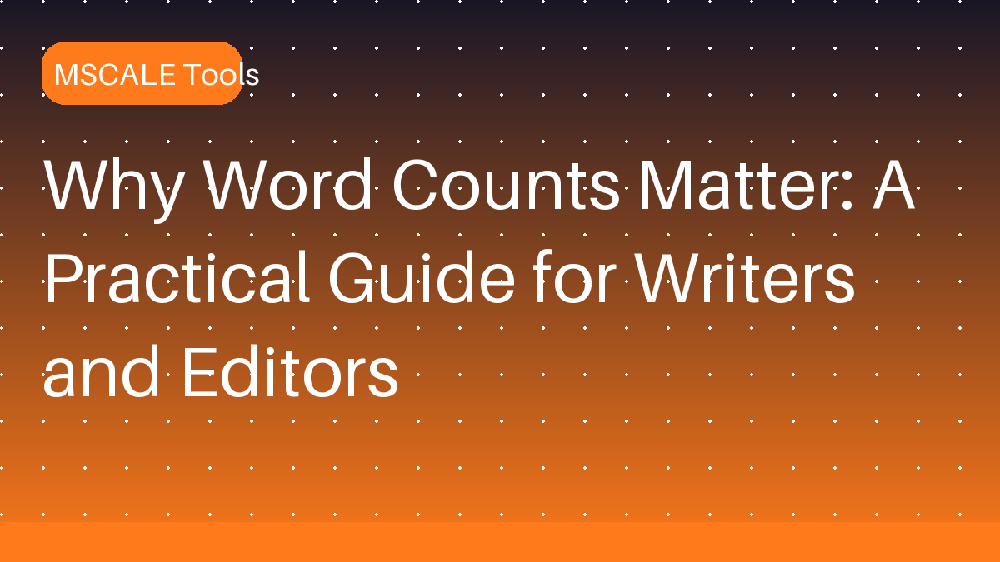

Why Word Counts Matter: A Practical Guide for Writers and Editors
Word limits are not bureaucracy. A practical guide to why word counts matter, how to hit them, and how to edit toward a target without gutting your work.

Every writer eventually meets a number. An essay that must be 2,000 words. A blog post that cannot exceed 1,200. A meta description with room for 155 characters. A freelance contract that pays per word. Word counts are often treated as bureaucracy to be tolerated, but they exist for good reasons, and learning to work with them, rather than resenting them, is one of the most practical skills in writing.
The principles below apply whether you are a student, a content marketer, a technical writer or a novelist negotiating with an editor.
Why limits exist in the first place
Most word limits encode a real constraint on the reader's side. Assignment lengths exist because a course must compare work fairly, and a fixed range is the only fair yardstick. Publication limits exist because attention is finite: a 3,000-word newsletter competes with everything else in the reader's inbox, and the editor knows the drop-off point from experience. Platform limits exist because of hard technical boundaries, a title tag truncated by a search engine, a message truncated by a screen.
There is a second, less obvious reason: length forces editing, and editing forces quality. A writer with unlimited space pads. A writer with a 1,000-word budget must decide what actually matters. The limit is not the enemy of the writing; it is often the reason the writing gets good. Many editors will tell you that cutting a draft from 1,600 words to 1,100 is where the piece is actually written.
The three numbers that matter more than the total
Words are the unit of substance
Word count measures substance: how much material the reader must absorb. When a brief says 1,000 words, it is making a claim about depth, about how much explanation, evidence and nuance the topic deserves. Under-shooting usually means the topic was not actually covered; overshooting usually means something in the piece is doing no work.
Characters are the unit of space
Character counts measure physical space, and they govern the web. Search engines truncate titles around 60 characters and descriptions around 160. Social platforms enforce their own limits. A headline that is brilliant at 74 characters simply will not display in full, so the last fourteen characters of polish are invisible. Watching characters, not words, is what fits copy into fixed slots.
Reading time is the unit of attention
Reading time converts length into the currency readers actually spend: minutes. At a typical adult silent-reading speed of 200 to 250 words per minute, a 1,000-word article is a four-to-five-minute commitment. Framing length this way changes decisions: a 2,500-word piece is not merely long, it is a ten-minute ask, and the content must earn ten minutes.
How to hit a target without gutting the work
The amateur approach to a 1,000-word target is to write 700 words and pad, or write 1,400 and butcher. Both produce worse writing than aiming correctly from the start. Professionals work differently, and their habits are learnable.
Plan to the budget
Before drafting, allocate the budget across sections. A 1,000-word article might spend 120 words on the introduction, 150 on each of four main sections, 120 on a practical example, and the rest on a conclusion. This allocation, written down before drafting, is the difference between hitting the target and discovering at the end that one section consumed half the budget.
Draft slightly over, then cut with rules
Draft to about ten percent over the target, then cut with rules rather than mood. Cut any sentence that only restates the previous one. Cut adverbs that duplicate the verb's meaning. Cut examples that illustrate the same point as another example. Cut the second-best quotation and keep the best. Each rule removes words without removing information, and together they routinely find ten to fifteen percent of a draft that can go.
Expand with substance, never with air
When a draft is under target, the temptation is to stretch sentences. Resist it. The honest ways to add length all add value: add an example that makes an abstract point concrete, add a step that a beginner would need, add a caveat that a careful reader would raise, add a short FAQ answering the question the piece inevitably provokes. Each of these earns its words. Air does not.
A workflow that keeps counts honest
Checking the word count after finishing a draft is like weighing luggage after packing: accurate, but too late to be convenient. Live counting changes the process. When the counter is visible while writing, section budgets enforce themselves, and the final count lands near the target without a crisis edit.
For long documents, count section by section, because a 9,000-word draft with one 4,000-word section has a structure problem that a total will not reveal.
When to break the rules
Every guideline has exceptions, and word counts are no different. Some topics genuinely need 3,000 words; some announcements genuinely need 80. The skill is knowing when a limit is a real constraint, external and non-negotiable, versus a convention, internal and adjustable. External limits are met, always. Internal conventions are negotiated with evidence: if the draft is 1,350 words and every section is doing work, the right move is often to raise the limit, not to cut.
What is never acceptable is padding: repetition dressed as emphasis, throat-clearing introductions, FAQs added as decoration. Readers and editors detect filler instantly, and filler costs more credibility than the extra words could ever buy.
The takeaway
Word counts are not the enemy of good writing; unedited writing is. Treat the limit as part of the assignment, budget sections before drafting, watch counts live rather than at the end, and expand only with substance. Writers who internalise this stop experiencing limits as obstacles and start using them as the editing force that makes their work tighter, clearer and more readable.
The three length metrics compared
| Metric | What it measures | Typical use | Hard limit? |
|---|---|---|---|
| Words | Amount of substance the reader absorbs | Essays, articles, freelance briefs | Rarely hard |
| Characters | Physical space the text occupies | Title tags, meta descriptions, social posts | Usually hard |
| Reading time | Minutes of attention the piece costs | Newsletters, video scripts, UX copy | Soft |
Word counts matter because every limit encodes a real constraint on the reader: attention, fairness or screen space. Treat the limit as part of the assignment, budget sections before drafting, count live while you write, and expand only with substance - never with padding.
Frequently Asked Questions
How do I count words accurately?
Use a tool that counts words the way word processors do: any run of visible characters separated by spaces is one word. A live counter that updates as you type is more useful than a final check, because it lets you steer section by section.
Do word counts include headings and FAQs?
Conventions vary by publisher. As a rule, count the body content the reader will read: paragraphs, lists and FAQ answers. Navigation, buttons and interface text are never counted.
What is a good blog post length?
Long enough to cover the topic with substance, which for most practical guides lands between 1,000 and 1,500 words. Shorter posts suit announcements; longer ones suit deep technical material.
How can I cut 200 words quickly?
Hunt restatements first, then adverbs duplicating verbs, then duplicate examples. These three passes almost always find ten percent of a draft without touching substance.
Is reading time a real metric?
Yes, with caveats. It is an estimate based on average silent-reading speed, but it is the most honest way to communicate a piece's cost in attention, which is what readers and editors actually care about.
Conclusion
Word limits are editing tools disguised as bureaucracy. Budget your sections before you draft, watch the count live instead of at the end, cut with rules rather than mood, and expand only with examples, steps and caveats that earn their place. Do that consistently and you will stop resenting limits and start using them - and the work you hand in will be tighter, clearer and more readable than the draft you would have submitted without one.